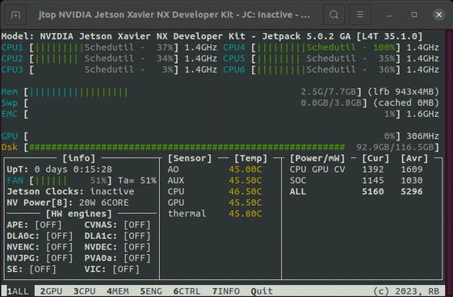
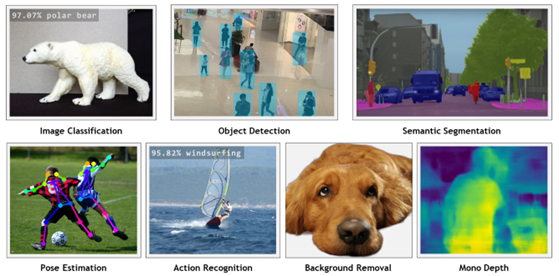

Jetson Nano

Jetson Nano: базовый одноплатный компьютер NVIDIA для использования ИИ.
- Работает на SoC Tegra Х1
- 2 или 4 Гб оперативной памяти
- Операционная система - JetPack (Ubuntu 18.04)
- Загружается с microSD, SSD или eMMC
- Потребляет 5–10 Вт.
- USB, HDMI, Ethernet порты
- 40-контактный GPIO-разъём
- Поддержка UART, I2C, SPI, 2 ШИМ порта

Установка
NVIDIA JetPack™ — это официальный программный стек для платформы NVIDIA Jetson™, предоставляющий вам комплексный набор инструментов и библиотек для разработки периферийных приложений на базе ИИ.
Официальная инструкция https://developer.nvidia.com/embedded/learn/get-started-jetson-nano-devkit
Официальная инструкция для NANO 4GB https://www.yahboom.net/study/jetson-nano
После установки обязательно:
sudo apt update
sudo apt upgrade
jtop
jtop - лучший инструмент для мониторинга устройств NVIDIA Jetson. Статья с обзором.

Установка:
sudo apt update sudo apt install python3-pip
После установки pip:
sudo pip3 install -U jetson-stats
После того как pip установит пакет jetson-stats, вам потребуется выйти/войти в систему или перезагрузить Jetson.
После перезагрузки, чтобы запустить jtop, откройте Терминал и выполните:
jtop
Python + conda
По умолчанию в JetPack стоят python 2.6 и python 3.6. Установка библиотек или попытки обновить версию python могут вызвать ошибки или сломать систему. Для безопасного программирования используется Miniforge.
Miniforge — это установщик Conda для ARM-устройств (Jetson, Raspberry Pi).
Conda — это инструмент:
- Менеджер пакетов: ставит и удаляет библиотеки (как apt или pip).
- Менеджер окружений: создаёт отдельные папки с разными версиями Python и библиотек. Они не мешают друг другу.
Miniforge даёт возможность ставить новый Python (3.8, 3.9, 3.10) в изолированные окружения, не ломая JetPack. Создаёт папку ~/miniforge3/, где хранятся все окружения.
wget https://github.com/conda-forge/miniforge/releases/latest/download/Miniforge3-Linux-aarch64.sh
bash Miniforge3-Linux-aarch64.sh
Перезагрузка, потом создание
conda create -n py39 python=3.9
conda activate py39
Чтобы отключить нужно написать
conda deactivate py39
Для проверки созданных окружений
conda info --envs
Увеличение SWAP (Оперативной памяти)
Jetson Nano имеет 2 или 4 Gb оперативной памяти. Это очень мало. Для компенсации этого используется swap.
swap — это участок памяти (файл или раздел на диске), который Linux использует как «виртуальное продолжение» оперативной памяти. swap работает медленнее чем настоящая оперативная память, но работа со swap быстрее чем без него.
Увеличение размера SWAP
Проверить текущий swap
free -h
Выключить текущий swap
sudo swapoff -a
Удалить старый swap-файл (если есть)
sudo rm /swapfile
Создать новый swap-файл нужного размера Например, для 6 ГБ:
sudo fallocate -l 6G /var/swapfile
Выставить права
sudo chmod 600 /var/swapfile
Разметить как swap
sudo mkswap /var/swapfile
Включить swap
sudo swapon /var/swapfile
Проверить swap
free -h
Или использовать jtop.
OpenCV
По умолчанию в JetPack стоит старая версия OpenCV 4.1.1.(2019 года). Для адекватной работы с OpenCV следует установить новейшие версии. НО! Для JetPack 4.6 нет готовых пакетов OpenCV, чтобы просто скачать и установить. Нужно будет собирать OpenCV с нуля.
Статья с полной инструкцией
Github
Запустить conda
conda activate py39
Перейти в папку загрузок
cd Downloads
Скачать через wget:
wget https://github.com/Qengineering/Install-OpenCV-Jetson-Nano/blob/main/OpenCV-4-13-0.sh
(Или скачать напрямую github)
запустить скрипт
sudo bash Install*
Скрипт будет работать 3-4 часа.
Jetson Inference
Jetson Inference — это библиотека и набор примеров для Jetson, упрощающие инференс моделей компьютерного зрения с ускорением TensorRT через API C++/Python.

Видеоуроки от NVIDIA:
https://www.youtube.com/watch?v=jSKHeYVcAB8&list=PL5B692fm6--uQRRDTPsJDp4o0xbzkoyf8
Уроки именно по Jetson Inference начинаются с этого видео:
https://www.youtube.com/watch?v=QXIwdsyK7Rw&list=PL5B692fm6--uQRRDTPsJDp4o0xbzkoyf8&index=9
Qengineering
GitHub Qengineering разные репозитории для Jetson Nano. Сайт
- Образ на Ubuntu 20.04 https://github.com/Qengineering/Jetson-Nano-Ubuntu-20-image
- Кастомный образ https://github.com/Qengineering/Jetson-Nano-image
- Распознание лиц https://github.com/Qengineering/Face-Recognition-Jetson-Nano, в маске https://github.com/Qengineering/Face-Recognition-with-Mask-Jetson-Nano